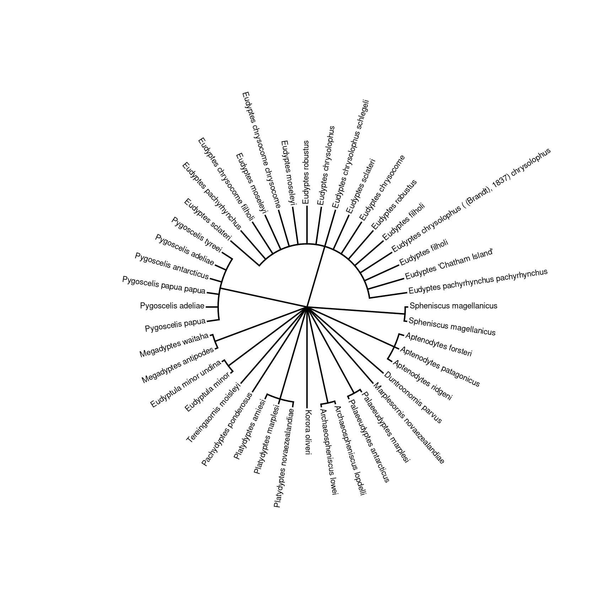

ALA4R enables the R community to directly access data hosted by the Atlas of Living Australia (ALA).
The ALA aggregates Australian biodiversity data from a range of sources, and makes the data freely availabel for scientists, policy makers, industry and the general public.
Stable version from CRAN:
install.packages("ALA4R")Or the development version from GitHub:
install.packages("devtools")
devtools::install_github("AtlasOfLivingAustralia/ALA4R@dev")On Linux you will first need to ensure that libcurl and v8 (version <= 3.15) are installed on your system — e.g. on Ubuntu/Debian, open a terminal and do:
or install via the Software Centre.
First, check that we have some additional packages that we’ll use in the examples, and install them if necessary.
to_install <- c("dplyr", "ggplot2", "ozmaps", "sf")
to_install <- to_install[!sapply(to_install, requireNamespace, quietly=TRUE)]
if(length(to_install)>0)
install.packages(to_install, repos="http://cran.us.r-project.org")
## In these examples we use the `dplyr` package to help with data manipulation.
library(dplyr)
library(ggplot2)
library(ozmaps)
library(sf)Retrieve information for a taxon or taxa. For each taxon, provide a scientific name at one or more ranks, or an ALA taxon id.
The output of ala_taxa() can be used as the taxon_id parameter in other functions.
# A single taxa
ala_taxa("Dasyurus viverrinus")## search_term scientific_name scientific_name_authorship
## 1 Dasyurus viverrinus Dasyurus viverrinus (Shaw, 1800)
## taxon_concept_id rank match_type kingdom phylum
## 1 urn:lsid:biodiversity.org.au:afd.taxon:52149285-a12a-4085-a285-b41af5ba3ce3 species exactMatch Animalia Chordata
## class order family genus species issues
## 1 Mammalia Dasyuromorphia Dasyuridae Dasyurus Dasyurus viverrinus noIssueala_taxa can optionally include record counts for a taxon, and the child concepts of the supplied taxon.
banksia <- ala_taxa(list(genus = "Banksia"), return_children = TRUE, include_counts = TRUE)
# Select only the species-level taxa, sort by count, and display the top 5
top5_banksia <- banksia %>% filter(rank == "species") %>%
arrange(desc(count)) %>%
select(scientific_name, taxon_concept_id, count) %>%
head(n = 5)
top5_banksia## scientific_name taxon_concept_id count
## 1: Banksia marginata https://id.biodiversity.org.au/node/apni/2912814 27332
## 2: Banksia spinulosa https://id.biodiversity.org.au/node/apni/7931274 13574
## 3: Banksia serrata https://id.biodiversity.org.au/taxon/apni/51293610 11192
## 4: Banksia integrifolia https://id.biodiversity.org.au/node/apni/2892579 10306
## 5: Banksia ericifolia https://id.biodiversity.org.au/taxon/apni/51299883 7280Use ala_taxa to lookup a taxon id
id <- "urn:lsid:biodiversity.org.au:afd.taxon:d315deea-822c-4f2c-b439-da33d6af5fd6"
ala_taxa(term = id, term_type = "identifier")## scientific_name scientific_name_authorship
## 1 Elusor macrurus Cann & Legler, 1994
## taxon_concept_id rank match_type kingdom phylum
## 1 urn:lsid:biodiversity.org.au:afd.taxon:d315deea-822c-4f2c-b439-da33d6af5fd6 species taxonIdMatch Animalia Chordata
## class order family genus species issues
## 1 Reptilia Testudines Chelidae Elusor Elusor macrurus noIssueDownload occurrence data for a taxon. To download occurrence data you will need to specify your email in ala_config(). This email must be associated with an active ALA account. To save your email for future sessions, set preserve = TRUE
ala_config(email = "ala4r@ala.org.au", preserve = TRUE)Download occurrence records for 5 Banksia species
occ <- ala_occurrences(taxon_id = top5_banksia)
head(occ)## X decimalLatitude decimalLongitude eventDate scientificName
## 1 1 -37.68690 149.0141 2011-01-10 Banksia marginata
## 2 2 -34.02774 150.9902 2011-01-01 Banksia spinulosa var. spinulosa
## 3 3 -30.86286 152.2726 2011-01-18 Banksia marginata
## 4 4 -29.03396 153.4487 2019-01-20 Banksia serrata
## 5 5 -31.40016 151.8790 2016-01-09 Banksia integrifolia subsp. monticola
## 6 6 -43.37276 146.1351 2000-01-31 Banksia marginata
## taxonConceptID recordID
## 1 https://id.biodiversity.org.au/node/apni/2912814 fff78000-ad2e-441e-8280-411eaced8223
## 2 https://id.biodiversity.org.au/node/apni/2913042 ffccf591-918c-42ad-81d5-e4433e2303b3
## 3 https://id.biodiversity.org.au/node/apni/2912814 ffc33869-0258-415e-9994-211216aac321
## 4 https://id.biodiversity.org.au/taxon/apni/51293610 ffacc5bd-d0d1-422e-8d29-9878a783b891
## 5 https://id.biodiversity.org.au/node/apni/2918640 ff974b09-62ec-4dda-8736-e1bff9f4edbc
## 6 https://id.biodiversity.org.au/node/apni/2912814 ff93c77e-223a-48fb-8333-c49380859fe6
## data_resource country
## 1 Victorian Biodiversity Atlas Australia
## 2 OEH Atlas of NSW Wildlife Australia
## 3 OEH Atlas of NSW Wildlife Australia
## 4 ALA species sightings and OzAtlas Australia
## 5 OEH Atlas of NSW Wildlife Australia
## 6 Tasmanian Natural Values Atlas Australia
# build filters and columns
cols <- ala_columns(group = "basic", extra = "country")
filters <- ala_filters(list(year = seq(2000, 2020)))
occ <- ala_occurrences(taxon_id = top5_banksia,
columns = cols, filters = filters)## X decimalLatitude decimalLongitude eventDate scientificName
## 1 1 -37.68690 149.0141 2011-01-10 Banksia marginata
## 2 2 -34.02774 150.9902 2011-01-01 Banksia spinulosa var. spinulosa
## 3 3 -30.86286 152.2726 2011-01-18 Banksia marginata
## 4 4 -29.03396 153.4487 2019-01-20 Banksia serrata
## 5 5 -31.40016 151.8790 2016-01-09 Banksia integrifolia subsp. monticola
## 6 6 -43.37276 146.1351 2000-01-31 Banksia marginata
## taxonConceptID recordID
## 1 https://id.biodiversity.org.au/node/apni/2912814 fff78000-ad2e-441e-8280-411eaced8223
## 2 https://id.biodiversity.org.au/node/apni/2913042 ffccf591-918c-42ad-81d5-e4433e2303b3
## 3 https://id.biodiversity.org.au/node/apni/2912814 ffc33869-0258-415e-9994-211216aac321
## 4 https://id.biodiversity.org.au/taxon/apni/51293610 ffacc5bd-d0d1-422e-8d29-9878a783b891
## 5 https://id.biodiversity.org.au/node/apni/2918640 ff974b09-62ec-4dda-8736-e1bff9f4edbc
## 6 https://id.biodiversity.org.au/node/apni/2912814 ff93c77e-223a-48fb-8333-c49380859fe6
## data_resource country
## 1 Victorian Biodiversity Atlas Australia
## 2 OEH Atlas of NSW Wildlife Australia
## 3 OEH Atlas of NSW Wildlife Australia
## 4 ALA species sightings and OzAtlas Australia
## 5 OEH Atlas of NSW Wildlife Australia
## 6 Tasmanian Natural Values Atlas AustraliaPlot occurrence data using ggplot
ggplot() + geom_sf(data = ozmap_country) +
geom_point(filtered_occ, mapping = aes(x = decimalLongitude, y = decimalLatitude,
colour = scientificName),size = .3)Occurrence searches can be narrowed down by area, a variety of filters, and data quality tests.
# Find all reptiles within a shapefile
id <- ala_taxa("Ornithorhynchus anatinus")
simple_shp <- st_cast(st_read('act_rect.shp'), "MULTIPOLYGON")
occ <- ala_occurrences(taxon_id = id, geometry = ala_geometry(area = simple_shp))
ggplot() + geom_sf(data = simple_shp) +
geom_point(data = occ, mapping = aes(x = decimalLongitude, y = decimalLatitude))
# Get all layers relating to precipitation
layers <- ala_layers()
layers[grepl("precipitation", tolower(layers$description)),]$name## [1] "2030A1BMk35M: Precipitation - driest month" "WorldClim: Precipitation - coldest quarter"
## [3] "WorldClim: Precipitation - warmest quarter" "WorldClim: Precipitation - driest quarter"
## [5] "WorldClim: Precipitation - wettest quarter" "WorldClim: Precipitation - seasonality"
## [7] "WorldClim: Precipitation - driest month" "WorldClim: Precipitation - wettest month"
## [9] "WorldClim: Precipitation - annual" "Precipitation - wettest month"
## [11] "Precipitation - driest month" "Precipitation - coldest quarter (Bio19)"
## [13] "Precipitation - warmest quarter (Bio18)" "Precipitation - driest quarter (Bio17)"
## [15] "Precipitation - wettest quarter (Bio16)" "Precipitation - seasonality (Bio15)"
## [17] "Precipitation - annual (Bio12)" "Precipitation - driest period (Bio14)"
## [19] "Precipitation - wettest period (Bio13)"ala_fields() displays all the fields available for filtering and
By default, the data quality profile is set to the ALA general.
# List available data quality profiles
ala_data_profiles()## id name shortName
## 1 2 ALA General ALA
## 2 35 Species Distribution Modelling (CSDM) CSDM
## 3 44 Data licensed for all uses re-usable
## description
## 1 The default ALA profile filters out records based on the filter groups outlined below. This is a moderately restricted set of data.
## 2 Base filters for the Collaborative Species Distribution Modelling program
## 3 Data licensed for re-use, including commercial uses. This profile only filters on license, no "quality" filters are applied.
# List filters for a profile
ala_quality_filters("CSDM")## description filter
## 1: Include only records where Spatial validity is "true" geospatial_kosher:"true"
## 2: Exclude potential duplicate records -duplicate_record:[* TO *]
## 3: Exclude all records that are an outlier against any environmental layer -outlier_layer_count:[* TO *]
## 4: Include only records where Year is 1970 to 2099 year:[1970 TO *]
# Total number of records in the ALA (with no data quality filters)
ala_counts()## [1] 91375535
# Total number of records, broken down by kindgom
ala_counts(breakdown = "kingdom")## name count
## 1 Animalia 66279879
## 2 Plantae 20783619
## 3 Fungi 1978267
## 4 Chromista 1036472
## 5 Protista 64587
## 6 Bacteria 58933
## 7 Protozoa 20798
## 8 Archaea 1103
## 9 Eukaryota 735
## 10 Virus 265
# Search for occurrences with images
filters <- ala_filters(list("multimedia" = "Image",
basis_of_record = "HumanObservation"))
occ <- ala_occurrences(quoll$taxon_concept_id,
filters = filters)
images <- ala_media(head(occ$recordID, n = 5), download_dir = 'data/',
identifier_type = "occurrence")
# filter by licence type
images %>% filter(recognisedLicence == "CC BY-NC 4.0")Various aspects of the ALA4R package can be customized.
ALA4R can cache most results to local files. This means that if the same code is run multiple times, the second and subsequent iterations will be faster. This will also reduce load on the ALA servers.
By default, this caching is session-based, meaning that the local files are stored in a temporary directory that is automatically deleted when the R session is ended. This behaviour can be altered so that caching is permanent, by setting the caching directory to a non-temporary location. For example, under Windows, use something like:
ala_config(cache_directory="c:/mydata/ala_cache")or for Linux:
ala_config(cache_directory="~/mydata/ala_cache")Note that this directory must exist (you need to create it yourself).
All results will be stored in that cache directory and will be used from one session to the next. They won’t be re-downloaded from the server unless the user specifically deletes those files or changes the caching setting to “refresh”.
If you change the cache_directory to a permanent location, you may wish to add something like this to your .Rprofile file, so that it happens automatically each time the ALA4R package is loaded:
setHook(packageEvent("ALA4R", "attach"), function(...)
ala_config(cache_directory=file.path("~", "mydata", "ala_cache")))Caching can also be turned off entirely by:
ala_config(caching="off")or set to “refresh”, meaning that the cached results will re-downloaded from the ALA servers and the cache updated. (This will happen for as long as caching is set to “refresh” — so you may wish to switch back to normal “on” caching behaviour once you have updated your cache with the data you are working on).
Sys.setenv(ala_email = "ala4r@ala.org.au")If things aren’t working as expected, more detail (particularly about web requests and caching behaviour) can be obtained by setting the verbose configuration option:
ala_config(verbose=TRUE)ALA requires that you provide a reason when downloading occurrence data (via the ALA4R occurrences() function). You can provide this as a parameter directly to each call of occurrences(), or you can set it once per session using:
ala_config(download_reason_id=your_reason_id)(See ala_reasons() for valid download reasons)
If you make a request that returns an empty result set (e.g. an un-matched name), by default you will simply get an empty data structure returned to you without any special notification. If you would like to be warned about empty result sets, you can use:
ala_config(warn_on_empty=TRUE)